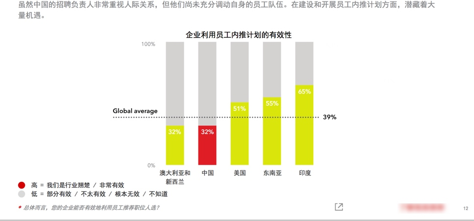

内部推荐（又称员工推荐），是企业通过发动企业内部员工调用自己的人脉资源来帮助公司推荐优秀候选人的招聘方法。
为什么内部推荐
国情如此：

我们看2013 年的数据
高素质人才的招聘更具有竞争和示范作用，是招聘的典型故数据以此为主。
数据告诉我们：
1）高素质人才招聘更多来源于内部推荐——来自LinkedIn 2013 全球人才招聘趋势的数字

2）内部员工比猎头行动还要厉害——来自腾讯当年的电商部门
通过内部伯乐这个招聘渠道招到的人才占到整个社会招聘的 48%，资深岗位内部伯乐的贡献率也达到 35% 之多——这让和腾讯合作的猎头们‘叫苦不迭’，他们不知道竞争对手是我们的内部员工
2015年的数据 (图表来自linkedin )
显示中国企业在2015年中招聘到的高质量员工有52% 来源于内部推荐

2016年的数据，只会升，不会降低
一个是企业的招聘需求增加，二个是人才对自己的职业发展要求越来越高。
招聘慢了的话，这个高素质人才就跑到别家公司上班了，哪怕你是口头预定了offer 给他。
一个优秀的人才，在市场上不出 1 周就基本上被抢空了。
紧急用人的时候，HR 招聘人员动作再快（如果他没有做预见性招聘工作），也比不上一个部门全体来推荐的动作。
要知道某个狼性的企业有一年还特别 要求员工过完年上班的时候，必须要给公司推荐 xxx 个人的。
显而易见，高素质人才的招聘本来就是资源的激烈竞争，内部招聘无论是成本还是时间上都是一个很霸气的存在——前提是你用好它，那么如何做呢？
内部推荐实施
从下图 Linkedin 数据来看，大部分的国内企业的内部推荐的有效性还不到全球平均水平 ，可见（ 32%——> 39%——> 65%）仍然有很大的提升空间，能用来提高内部推荐的有效性，为企业高速发展提供更有效的支持。

实施的时候有哪些节点呢以及要注意哪些？
一般节点
- 制定奖励政策
- 发布悬赏职位名单
- 制作内部推荐登记表，方便员工发送或打印提交 HR 及汇总
- Weshare 网络和线下公告，比如 公司通勤车、茶水间、邮件
- 推荐进度反馈
- 内部推荐问答
具体实施方法其实还有很多
- 分类大法，优秀的人周围也是聚集了更多优秀的人。比如统计出过去 12 个月里招聘过来的表现优秀的员工，重点让他们来推荐。
- 在招聘后，入职阶段。。。。
特别关注点
内部推荐项目，详细定义激励的要素及操作的流程。
- 在试运行的过程中，调查参与推荐的员工， 问他们这个项目里哪些方面对他们的参与有促进作用？哪些方面还需要提升？并询问他们期望得到的奖励和激励的列表，其中哪些部分尤其让他们感觉到兴奋？
- 你也可以调查哪些没有参与的员工，哪些方面阻碍了他们参与推荐？
- 在奖励和激励的列表里，哪一个可能会提升他们的参与度？
- 走出去与其他公司 HR 进行探讨，鉴别和分享最有效或最新的方式，激励员工内部推荐
其实内部推荐，基本的还是离不开全体员工参与的意愿。如果不能长效地做，只是打算试探、试试这个渠道/方法有没有效果，那么员工的意愿就会受到打击了——他也不是天天有朋友在找工作，也不是每一个朋友他都会推荐来的，企业在这一块如何做呢？
a）要做出示范效应
示范给大家知道，比如这个员工一直有推荐，是不是给定个伯乐勋章呢，弄个定制的铭牌呢？该宣传的就要宣传。比如奖励的信息要让全体人员知道吧，鼓励的气氛要营造吧。
b) 要做水磨功夫
没有合适岗位的时候也要跟进员工推荐的简历，哪怕这个简历不合格不合适，也要跟进，该感谢的感谢，该保存进人才库的保存进去。可千万别弄个不更新的人才库。
内部推荐补充：
高端岗位还可以深入使用
如果企业规模小，用人急，怎么办？这个方法有用吗？
它们其实都要指向——A级人才
行业分布应该懂吧（又是一篇长文。。。）
欢迎联系 Arvin Yu , 邮箱：yuyandong@outlook.com
或长按以下二维码关注 公众号： 稻田无忧

本作品采用 知识共享署名-非商业性使用-禁止演绎 3.0 Unported许可协议 进行许可。